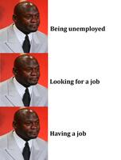

Apple may have a supply problem on its hands with the MacBook Neo... The laptop reportedly relies on "binned" A18 Pro chips with one GPU core disabled, and demand is so strong that the supply of those cheaper leftover chips could run out before the next model is ready. That leaves Apple choosing between lower margins, shifting production plans, or changing the lineup to keep its $599 hit product in stock. MacRumors reports: The all-new MacBook Neo has been such a hit that Apple is facing a "massive dilemma," according to Taiwan-based tech columnist and former Bloomberg reporter Tim Culpan. [...] In the latest edition of his Culpium newsletter today, Culpan said the MacBook Neo is selling so well that Apple's supply of the binned A18 Pro chips with a 5-core GPU will "run out" before the company is able to fully satisfy demand for the laptop. Apple's initial plan was to have suppliers build around five to six million MacBook Neo units before ceasing production of the model with the A18 Pro chip, he said, but it sounds like demand is so strong that Apple might run out of A18 Pro chips to put in the MacBook Neo before the second-generation MacBook Neo with an A19 Pro chip is ready next year. Apple is unlikely to mark the MacBook Neo as temporarily sold out, so it may be forced to take action, but profit margins might be affected.
A18 Pro chips are manufactured with TSMC's second-generation 3nm process, known as N3E, and Culpan said TSMC's N3E production lines are currently operating at maximum capacity. As a result, he said that Apple may have to pay a premium to restart A18 Pro chip production for the MacBook Neo, which would lower its profit margins. Apple would have to disable a GPU core on these chips to ensure that they have only a 5-core GPU, like all other MacBook Neo units sold to date. Alternatively, Culpan said that Apple could reallocate some of its chip production that was originally planned for other devices, but he said the cost would still be higher than what it paid for its initial batch of A18 Pro chips.
Culpan speculated that Apple could also opt to discontinue the $599 model with 256GB of storage, leaving the $699 model with 512GB of storage and a Touch ID button as the only configuration available. This is unlikely to happen any time soon, in our view, given how heavily Apple has been promoting the MacBook Neo's affordability. Apple might also be able to move up the release of a MacBook Neo with the iPhone 17 Pro's A19 Pro chip, but that too would be a costlier option, at least until the company achieves a sufficient stockpile of binned A19 Pro chips with a 5-core GPU. In any case, Apple could opt to keep the starting price of current and future MacBook Neo models at $599 and simply accept lower profit margins on the laptop, especially given that it attracts customers to the macOS and broader Apple ecosystem.
Read more of this story at Slashdot.
"Anthropic has unveiled Claude Mythos, a new AI model capable of discovering critical vulnerabilities at scale," writes Slashdot reader wiredmikey. "It's already powering Project Glasswing, a joint effort with major tech firms to secure critical software. But the same capabilities could also accelerate offensive cyber operations." SecurityWeek reports: Mythos is not an incremental improvement but a step change in performance over Anthropic's current range of frontier models: Haiku (smallest), Sonnet (middle ground), and Opus (most powerful). Mythos sits in a fourth tier named Copybara, and Anthropic describes it as superior to any other existing AI frontier model. It incorporates the current trend in the use of AI: the modern use of agentic AI. "The powerful cyber capabilities of Claude Mythos Preview are a result of its strong agentic coding and reasoning skills... the model has the highest scores of any model yet developed on a variety of software coding tasks," notes Anthropic in a blog titled Project Glasswing -- Securing critical software for the AI era.
In the last few weeks, Mythos Preview has identified thousands of zero-day vulnerabilities with many classified as critical. Several are ten or 20 years old -- the oldest found so far is a 27-years old bug in OpenBSD. Elsewhere, a 16-years old vulnerability found in video software has survived five million hits from other automated testing tools without ever being discovered. And it autonomously found and chained together several in the Linux kernel allowing an attacker to escalate from ordinary user access to complete control of the machine. [...] Anthropic is concerned that Mythos' capabilities could unleash cyberattacks too fast and too sophisticated for defenders to block. It hopes that Mythos can be used to improve cybersecurity generally before malicious actors can get access to it.
To this end, the firm has announced the next stage of this preparation as Project Glasswing, powered by Mythos Preview. Given the rate of AI progress, it will not be long before such capabilities proliferate, potentially beyond actors who are committed to deploying them safely. "Project Glasswing is a starting point. No one organization can solve these cybersecurity problems alone: frontier AI developers, other software companies, security researchers, open-source maintainers, and governments across the world all have essential roles to play." Claude Mythos Preview is described as a general-purpose, unreleased frontier model from Anthropic that has nevertheless completed its training phase. The firm does not plan to make Mythos Preview generally available. The implication is that 'Preview' is a term used solely to describe the current state of Mythos and the market's readiness to receive it, and will be dropped when the firm gets closer to general release.
Read more of this story at Slashdot.
Anthropic says its annualized revenue run rate has surpassed $30 billion and disclosed plans to secure roughly 3.5 gigawatts of next-generation Google TPU compute starting in 2027. Broadcom will supply the key chips and networking gear for the effort, the company announced. The Register reports: News of the two deals emerged today in a Broadcom regulatory filing that opens with two items of news. One is a "Long Term Agreement for Broadcom to develop and supply custom Tensor Processing Units ("TPUs") for Google's future generations of TPUs." Google and Broadcom have collaborated to produce custom TPUs. Broadcom CEO Hock Tan recently shared his opinion that hyperscalers don't have the skill to create custom accelerators and predicted Broadcom's chip business will therefore win over $100 billion of revenue from AI chips in 2027 alone.
Working on next-gen TPUs for Google will presumably help to make that prediction a reality. So will the second part of Broadcom's announcement: a "Supply Assurance Agreement for Broadcom to supply networking and other components to be used in Google's next-generation AI racks through up to 2031." Broadcom's filing also revealed one user of Google's next-gen TPU will be Anthropic, which starting in 2027, "will access through Broadcom approximately 3.5 gigawatts as part of the multiple gigawatts of next generation TPU-based AI compute capacity committed by Anthropic."
Read more of this story at Slashdot.
Cloudflare is accelerating its post-quantum security plans and now aims to make its entire platform fully post-quantum secure by 2029. "The updated timeline follows new developments in quantum computing research that suggest current cryptographic standards could be broken sooner than previously expected," reports SiliconANGLE. From the report: The decision by Cloudflare to move its post-quantum security roadmap forward comes after Google LLC and research from Oratomic demonstrated significant advances in algorithms and hardware capable of breaking widely used encryption methods such as RSA-2048 and elliptic curve cryptography. [...] The company said progress across three key areas -- quantum hardware, error correction and quantum algorithms -- is advancing in parallel and compounding overall capability. Improvements in areas such as neutral atom architectures and more efficient error correction are reducing the resources required to break encryption, while algorithmic advances are lowering computational complexity. [...]
Cloudflare has already deployed post-quantum encryption across a large portion of its network and reports that more than half of human traffic it processes now uses post-quantum key agreement. The company plans to expand support for post-quantum authentication in 2026, followed by broader deployment across its network and products through 2028. By 2029, Cloudflare said, it expects all of its services to be fully post-quantum secure, with those services being available by default across its platform, without requiring customer action or additional cost as part of the company's commitment to security upgrades. Google said it plans to accelerate its post-quantum encryption migration target to 2029.
Read more of this story at Slashdot.
LinkedIn is facing allegations that it quietly scans users' browsers for installed Chrome extensions. The German group Fairlinked e.V. goes so far as to claim that the site is "running one of the largest corporate espionage operations in modern history."
"The program runs silently, without any visible indicator to the user," the group says. "It does not ask for consent. It does not disclose what it is doing. It reports the results to LinkedIn's servers. This is not a one-time check. The scan runs on every page load, for every visitor." PCMag reports: This browser extension "fingerprinting" technique has been spotted before, but it was previously found to probe only 2,000 to 3,000 extensions. Fairlinked alleges that LinkedIn is now scanning for 6,222 extensions that could indicate a user's political opinions or religious views. For example, the extensions LinkedIn will look for include one that flags companies as too "woke," one that can add an "anti-Zionist" tag to LinkedIn profiles, and two others that can block content forbidden under Islamic teachings.
It would also be a cakewalk to tie the collected extension data to specific users, since LinkedIn operates as a vast professional social network that covers people's work history. Fairlinked's concern is that Microsoft and LinkedIn can allegedly use the data to identify which companies use competing products. "LinkedIn has already sent enforcement threats to users of third-party tools, using data obtained through this covert scanning to identify its targets," the group claims. However, LinkedIn claims that Fairlinked mischaracterizes a LinkedIn safeguard designed to prevent web scraping by browser extensions. "We do not use this data to infer sensitive information about members," the company says. "To protect the privacy of our members, their data, and to ensure site stability, we do look for extensions that scrape data without members' consent or otherwise violate LinkedIn's Terms of Service," LinkedIn adds.
[...] The statement goes on to allege that Fairlinked is from a developer whose account was previously suspended for web scraping. One of the group's board members is listed as "S.Morell," which appears to be Steven Morell, the founder of Teamfluence, a tool that helps businesses monitor LinkedIn activity. [...] Still, the Microsoft-owned site is facing some blowback for not clearly disclosing the browser extension scanning in LinkedIn's privacy policy. Fairlinked is soliciting donations for a legal fund to take on Microsoft and is urging the public to encourage local regulators to intervene.
Read more of this story at Slashdot.
Longtime Slashdot reader walterbyrd shares a report from Fuel Cells Works: China says the AEP100, a megawatt-class hydrogen-fueled turboprop engine developed by the Aero Engine Corporation of China, has completed its maiden flight on a 7.5-ton unmanned cargo aircraft in Zhuzhou, Hunan. The 16-minute test covered 36km at 220km/h and 300 meters altitude, with the aircraft returning safely after completing its planned maneuvers. State media described it as the world's first test flight of a megawatt-class hydrogen-fueled turboprop engine. [...] The Aero Engine Corporation of China (AECC) says the result shows China now has a full technical chain for hydrogen aviation engines, from core parts to system integration, which is the kind of capability needed before any industrial rollout can begin. You can watch a video of the test flight here.
Read more of this story at Slashdot.
An anonymous reader quotes a report from Reuters: A federal appeals court ruled on Monday that New Jersey gaming regulators cannot prevent Kalshi from allowing people in the state to use its prediction market to place financial bets on the outcome of sporting events.
A three-judge panel of the Philadelphia-based 3rd U.S. Circuit Court of Appeals ruled 2-1 (PDF) in finding that the U.S. Commodity Futures Trading Commission has exclusive jurisdiction over the sports-related event contracts that Kalshi allows people to trade on its platform. The ruling marked the first time a federal appeals court has ruled on what has become the central issue in an escalating battle over the ability of state gaming regulators to police the activity of prediction market operators.
Kalshi and companies like it allow users to place trades and profit from predictions on events such as sports and elections. States argue that firms like Kalshi are operating without required state licenses, in violation of gaming laws, including bans on wagers by those under 21. Those states include New Jersey, which last year sent Kalshi a cease-and-desist letter stating that its listing of sports-related event contracts on its platform violated state gambling laws that prohibit betting on collegiate sports. Kalshi sued the state, arguing its event contracts qualify as "swaps," a type of derivative contract, that under the Commodity Exchange Act can only be regulated by the CFTC, which had granted the company a license to operate a designated contract market (DCM).
A lower-court judge had sided with New York-based Kalshi and issued a preliminary injunction, prompting New Jersey to appeal. But a majority of the judges on the 3rd Circuit panel concluded the Commodity Exchange Act likely preempted state law. "Kalshi's sports-related event contracts are swaps traded on a CFTC-licensed DCM, so the CFTC has exclusive jurisdiction," U.S. Circuit Judge David Porter wrote. The ruling was in line with the position advanced in other litigation by the CFTC under President Donald Trump's administration. The regulator last week sued Arizona, Connecticut and Illinois to prevent them from pursuing what it called unlawful efforts to regulate prediction markets.
Read more of this story at Slashdot.
A teardown video of LG's never-released Rollable phone helps explain why rollable phones never became a real product category: they were likely too expensive, fragile, and complicated to manufacture at scale.
"The complexity of the internals would have made the Rollable extremely expensive to manufacture, and it would have demanded a high price tag," reports Ars Technica. "Durability is also a big concern. There's just a lot going on inside this phone, with multiple motors, springy arms, tracks, and a screen that has to loop around the back. [...] It seems unlikely the LG Rollable could have survived daily use for multiple years." From the report: The LG Rollable is just one of several rollable concept phones that appeared throughout the early 2020s. Flexible OLED screens had finally become affordable, leading to foldable phones like the Samsung Galaxy Z Fold. Although, "affordable" is relative here. Foldables were and still are very expensive devices. Based on what we can see of the complex inner workings of the LG Rollable, these devices may have commanded even higher prices. Noted YouTube phone destroyer JerryRigEverything managed to snag a working prototype LG Rollable. It may even be the unit LG demoed at CES 2021.
The device looks like a regular phone at first glance, but a quick swipe activates the motor, which unfurls additional screen real estate from around the back. This makes the viewable area about 40 percent larger without the added thickness of a foldable. The device expands with the aid of two tiny motors, which are attached via straight teeth to an internal track. The screen assembly has zipper-like teeth that keep it locked into the frame as it moves. The motors make a surprising amount of noise when operating, so LG designed the phone to play a musical chime to hide the sound. While the motor does the heavy lifting, the phone also has a lattice of articulating spring-loaded arms inside that keep the OLED panel even as the frame slides side to side. The battery and motherboard sit in a tray that allows the back of the phone to expand as the OLED rolls into view.
This is a prototype phone, featuring a chunky frame and visible screws. That helped Zack Nelson from JerryRigEverything successfully disassemble and reassemble the phone. So this little bit of mobile history was not destroyed, and the teardown gives us a good look at how LG was hoping to attract new customers before calling it quits.
Read more of this story at Slashdot.
An anonymous reader quotes a report from TechCrunch: A group of Russian government hackers have hijacked thousands of home and small business routers around the world as part of an ongoing campaign aimed at redirecting victim's internet traffic to steal their passwords and access tokens, security researchers and government authorities warned on Tuesday. [...] The hacking group targeted unpatched routers made by MikroTik and TP-Link using previously disclosed vulnerabilities according to the U.K. government's cybersecurity unit NCSC and Lumen's research arm Black Lotus Labs, which released new details of the campaign Tuesday.
According to the researchers, the hackers were able to spy on large numbers of people over the course of several years by compromising their routers, many of which run outdated software, leaving them vulnerable to remote attacks without their owners' knowledge. The NCSC said that these operations are "likely opportunistic in nature, with the actor casting a wide net to reach many potential victims, before narrowing in on targets of intelligence interest as the attack develops." Per the researchers and government advisories, the Russian hackers hacked routers to modify the device's settings so that the victim's internet requests are surreptitiously passed to infrastructure run by the hackers. This allows the hackers to redirect victims to spoof websites under their control, then steal passwords and tokens that let the hackers log in to that victim's online accounts without needing their two-factor authentication codes.
Black Lotus Labs said that Fancy Bear compromised at least 18,000 victims in around 120 countries, including government departments, law enforcement agencies, and email providers across North Africa, Central America, and Southeast Asia. Microsoft, which also released details of the campaign on Tuesday, said in a blog post that its researchers identified over 200 organizations and 5,000 consumer devices affected by these hacking operations, including at least three government organizations in Africa. The Justice Department said Tuesday it neutralized compromised routers in the U.S. under court authorization. As the DOJ put it, the FBI "developed a series of commands to send to compromised routers" to collect evidence, reset settings, and prevent hackers from breaking back in.
Read more of this story at Slashdot.
Chrome is finally adding built-in vertical tabs, "which will move the tabs to the side of the browser window, making it easier to read full page titles and manage tab groups," reports TechCrunch. The company is also introducing an immersive reading mode for a distraction-free, text-focused experience. From the report: The company notes that the new vertical tabs can be enabled at any time by right-clicking on a Chrome window and selecting "Show Tabs Vertically." The company says there's no hard limit on the number of tabs that can be opened (beyond what would be limited already by the user's hardware). The vertical tabs work just as the horizontal tabs do, meaning you can have different Chrome windows with their own set of tabs or tab groups.
[...] Alongside the launch of vertical tabs, Chrome is also rolling out a new Reading Mode experience, which will offer a full-page interface to make it even easier to reduce on-screen clutter to focus on the text. This will be the new default experience for Chrome users, and arrives at a time when web pages, particularly those on news sites, have become cluttered with ads and prompts to subscribe to newsletters.
Read more of this story at Slashdot.
An anonymous reader quotes a report from TorrentFreak: Following on the heels of the landmark Cox v. Sony ruling, the Supreme Court has vacated the contributory copyright infringement verdict against ISP Grande Communications, ordering the Fifth Circuit to reconsider its decision in light of the new precedent. [...] The order (PDF) effectively removes the case from the Supreme Court docket, urging the Fifth Circuit Court of Appeals to take another look at its decision in light of the new ruling.
Given the similarities between the two cases, it is no surprise that the Supreme Court came to this conclusion. It is now up to the Fifth Circuit to revisit whether Grande's conduct meets the intent threshold that was established in Cox. That is a significantly higher bar than the one applied in the original verdict, which found that continuing to provide service to known infringers was enough to establish material contribution.
The music companies previously said they sent over a million copyright infringement notices, but that Grande failed to terminate even a single subscriber account in response. However, without proof of active inducement, these absolute numbers carry less weight now. Whether this translates into a win for Grande on remand remains to be seen. For now, however, the original $47 million verdict is further away than ever.
Read more of this story at Slashdot.
A New York Times analysis found Google's AI Overviews now answer questions correctly about 90% of the time, which might sound impressive until you realize that roughly 1 in 10 answers is wrong. "[F]or Google, that means hundreds of thousands of lies going out every minute of the day," reports Ars Technica. From the report: The Times conducted this analysis with the help of a startup called Oumi, which itself is deeply involved in developing AI models. The company used AI tools to probe AI Overviews with the SimpleQA evaluation, a common test to rank the factuality of generative models like Gemini. Released by OpenAI in 2024, SimpleQA is essentially a list of more than 4,000 questions with verifiable answers that can be fed into an AI.
Oumi began running its test last year when Gemini 2.5 was still the company's best model. At the time, the benchmark showed an 85 percent accuracy rate. When the test was rerun following the Gemini 3 update, AI Overviews answered 91 percent of the questions correctly. If you extrapolate this miss rate out to all Google searches, AI Overviews is generating tens of millions of incorrect answers per day.
The report includes several examples of where AI Overviews went wrong. When asked for the date on which Bob Marley's former home became a museum, AI Overviews cited three pages, two of which didn't discuss the date at all. The final one, Wikipedia, listed two contradictory years, and AI Overviews confidently chose the wrong one. The benchmark also prompts models to produce the date on which Yo Yo Ma was inducted into the classical music hall of fame. While AI Overviews cited the organization's website that listed Ma's induction, it claimed there's no such thing as the Classical Music Hall of Fame. "This study has serious holes," said Google spokesperson Ned Adriance. "It doesn't reflect what people are actually searching on Google." The search giant likes to use a test called SimpleQA Verified, which uses a smaller set of questions that have been more thoroughly vetted.
Read more of this story at Slashdot.
An anonymous reader quotes a report from the New York Times: President Javier Milei of Argentina promoted a cryptocurrency last year that quickly skyrocketed in value then cratered just as fast, costing investors millions of dollars and setting off a scandal and an investigation. Mr. Milei said he was simply highlighting a private venture and had no connection to the digital coin called $Libra. New evidence is now raising questions about his assertion. Phone logs from a federal investigation by Argentine prosecutors into the coin's collapse show seven phone calls between Mr. Milei and one of the entrepreneurs behind the cryptocurrency on the night in 2025 when Mr. Milei posted about $Libra on X. The contents of the calls, which took place before and after Mr. Milei's post, are not known.
But the phone logs -- which were obtained by The New York Times and first reported by a local cable news channel, C5N -- suggest a greater degree of communication between Mr. Milei and the entrepreneurs who launched the token than what the president has publicly acknowledged. Newly uncovered messages also suggest Mr. Milei received regular payments from one of the entrepreneurs while he was a congressman. Mr. Milei has not publicly commented on the call logs and other documents, and he did not respond to a request for comment. He is named as a person of interest in the federal prosecutor's continuing investigation into the digital coin, according to court documents reviewed by The Times, but has not been formally charged with any crime. The latest revelations have revived a scandal that threatens the very foundation of a president who rose to power and was elected president in 2023 by attacking a political class he called corrupt.
Read more of this story at Slashdot.
theodp writes: "Gates Computer Science Building renamed Peter Thiel Center for Panoptic Computing" reads the headline of an April Fools' Day story that ran in the Humor section of The Stanford Daily (with the further disclaimer that "This article is purely satirical and fictitious"). The story begins: "Following revelations that the billionaire founder of Microsoft, Bill Gates, had a longstanding relationship with convicted child sex trafficker Jeffrey Epstein, Stanford has announced it will strip Gates' name from the William H. Gates Computer Science Building and instead honor alumnus Peter Thiel B.A. '89, JD '92. Gates, who is not a Stanford alumnus, gave an initial gift of $6 million toward the building's construction in 1992."
While fictional, the story does make one wonder what may become of the academic and institutional buildings worldwide named after Bill Gates in the blowback over his past ties to Epstein, which have already played a factor in the breakdown of his marriage to Melinda French Gates and friendship with Warren Buffet. In addition to The Gates Computer Science Building at Stanford, this includes the Bill and Melinda Gates Computer Science Complex at the University of Texas at Austin, Bill and Melinda Gates Hall at Cornell, The Bill & Melinda Gates Center for Computer Science & Engineering at the University of Washington, and The William H. Gates Building at MIT's Stata Center. Buildings named after Gates' parents include Mary Gates Hall and William H. Gates Hall at the University of Washington, and The William Gates Building at the University of Cambridge (UK).
Aside from the Thiel angle, The Stanford Daily's April Fools' Day story may not be as far-fetched as it may seem -- many universities' naming policies include provisions allowing donors' names to be removed from buildings, programs, or other facilities under extraordinary circumstances. For example, the University of Washington's Regent Policy No. 50 states, "The University reserves the right to revoke and terminate any naming on reasonable grounds not limited to the revelation of corporate or individual acts detracting from the University's mission, integrity, or reputation." Then again, UW notes that Bill's parents and siblings served as UW Regents for decades, so one expects Bill will be granted some leeway here for what he has characterized as 'foolish' choices on his part.
Read more of this story at Slashdot.
OpenAI is proposing (PDF) sweeping policy changes to help manage the societal disruption caused by advanced AI, including taxes on automated labor, a public wealth fund, and experiments with a four-day workweek. The company said the policy document offered a series of "initial ideas" to address the risk of "jobs and entire industries being disrupted" by the adoption of AI tools. Business Insider reports: Among the core policy suggestions is a public wealth fund, which would see lawmakers and AI companies work together to invest in long-term assets linked to the AI boom, with returns distributed directly to citizens. Another is that the government should encourage and incentivize employers to experiment with four-day workweeks with no loss in pay and offer "benefits bonuses" tied to productivity gains from new AI tools.
The policy document also suggests lawmakers modernize the tax system and shift the tax base to corporate income and capital gains, rather than relying on labor income and payroll taxes that could be hit by a wave of AI-powered job losses. It also recommends taxes related to automated labor. OpenAI also called for the accelerated expansion of the US's electricity grid, which is already feeling the strain from a wave of data center construction and energy demand for training ever more powerful AI models.
Read more of this story at Slashdot.
Bill Toulas / BleepingComputer : FBI: US victims lost ~$21B to cybercrime in 2025, up 26% YoY, driven by investment scams, business email compromise, tech support fraud, and data breaches — U.S. victims lost nearly $21 billion to cyber-enabled crimes last year, driven primarily by investment scams, business email compromise …
Marilen Martin / Bloomberg : Kuka, one of the largest industrial robotics suppliers, says it is prioritizing US and Asia investments, as Europe's industrial companies are slow to adopt AI — Many of Europe's industrial companies are too slow to adopt artificial intelligence, putting faster-moving global rivals in a position …
Reuters : TikTok says it plans to invest €1B to build a second data center in Finland as part of its €12B European data sovereignty initiative for the data of 200M+ users — TikTok plans to invest 1 billion euros ($1.16 billion) to build a second data centre in Finland in less than a year …
Cristina Criddle / Financial Times : Sources: Perplexity's estimated ARR rose to over $450M in March, jumping 50% in a month after the launch of a new agent tool and a shift to usage-based pricing — San Francisco-based start-up surges from push into more complex and potentially more lucrative AI services
Harsh Upadhyay / Entrackr : Bengaluru-based KreditBee, a digital lending service for personal and business loans and more, raised a $280M Series E at a $1.5B post-money valuation — Digital lending platform KreditBee has raised $280 million in its Series E round at a post-money valuation of $1.5 billion.
Ryan Lawler / Axios : Modus, which builds AI agents for audit workflows and invests in established accounting firms, raised a $5M seed and an $80M Series A led by Lightspeed — Modus, which buys majority stakes in advisory entities affiliated with accounting firms, raised $85 million in seed and Series A funding, CEO Arush Jain tells Axios exclusively.
Kari Soo Lindberg / Bloomberg : Sources: Bain's data center unit cuts ties with Megaspeed, which is under US investigation over if it helped Chinese companies evade Nvidia AI chip export curbs — Bain Capital's Bridge Data Centres has removed from its Malaysian computing hub a Southeast Asian company the US suspects of smuggling Nvidia Corp. chips.
Ana Faguy / BBC : Bill Gates is set to appear before the US House Oversight Committee on June 10 about his Epstein ties; he says he's “looking forward” to answering the questions — Microsoft co-founder Bill Gates is set to testify before the US congress in June about his interactions …
Janko Roettgers / Fast Company : Niantic Spatial launches Scaniverse, a platform that lets companies and individuals create robot-ready 3D maps using phone, 360-degree camera, and drone data — The company behind ‘Pokémon Go’ is now creating an AI- and robot-ready 3D model of everything around us. — [Animation: Niantic]
Jude Joffe-Block / NPR : Letter: ICE officials confirm they are using Graphite spyware to intercept encrypted messages, saying it is primarily used to target fentanyl traffickers — Immigration and Customs Enforcement is using spyware tools that can intercept encrypted messages as part of the agency's efforts …
Bloomberg : A pro-Iranian cybercrime group claims responsibility for cyberattacks on Chime and Pinterest that knocked the websites of both companies offline this month — A pro-Iranian cybercrime group has claimed responsibility for cyberattacks on Chime Financial Inc. and Pinterest Inc. that knocked the websites of both companies offline.
Brent D. Griffiths / Business Insider : Mythos Preview system card: the model was able to escape a sandbox after it was instructed to try, and posted details about its exploit without being prompted — - Anthropic said its next-generation AI model is too powerful for the public. — That's why Claude Mythos won't be publicly released, Anthropic said.
Sarah Wynn / The Block : The US FDIC proposes a rule to establish a regulatory framework for stablecoin issuers, including requirements related to reserve assets, under the GENIUS Act — Quick Take — The FDIC voted to propose a rule that would set forth standards for stablecoin issuers, including requirements involving reserve assets.
Harshita Mary Varghese / Reuters : Super Micro begins an independent probe into the indictment of three people for export control violations and an internal review of its trade compliance program — Super Micro (SMCI.O) said on Tuesday it had begun an independent investigation into the indictment of three people linked …
Brody Ford / Bloomberg : Anthropic hires Microsoft executive Eric Boyd as head of infrastructure; Boyd oversaw Microsoft's AI platform and worked at the company for 16 years — Anthropic PBC has hired a senior leader from Microsoft Corp. to lead its push to establish the infrastructure needed to support growing adoption …